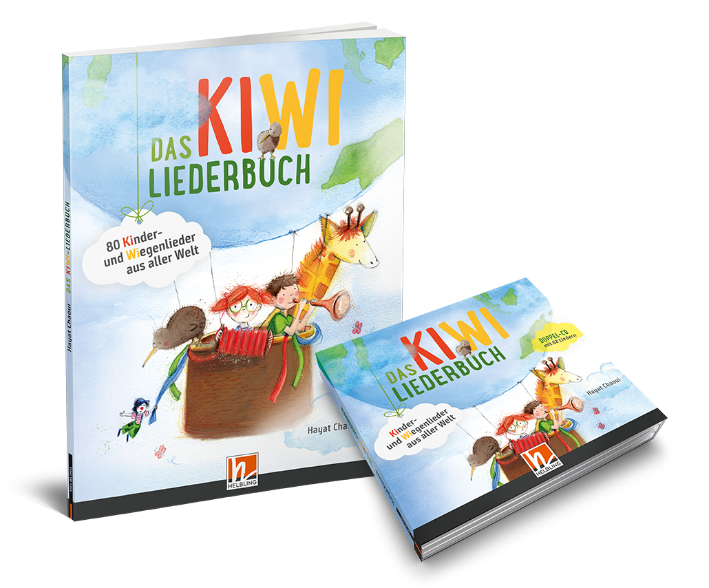

|

|
Gefallen Euch die Lieder?
62 Lieder von und mit Hayat Chaoui sind auch auf der Doppel-CD und im gleichnamigen Liederbuch zu finden.
Jetzt bestellen auf www.helblingmusik4kids.de!
Kiwi, der kleine Laufvogel, nimmt Kinder und ihre Eltern mit auf seine musikalische Reise um die Welt: Da gibt es neue Melodien und Klänge zu entdecken, interessante Sprachen und lustige Bewegungsideen. Darüber hinaus zeichnen vor allem die zauberhaften Arrangements, die ausschließlich mit echten Instrumenten eingespielt wurden, diese Liedersammlung aus.